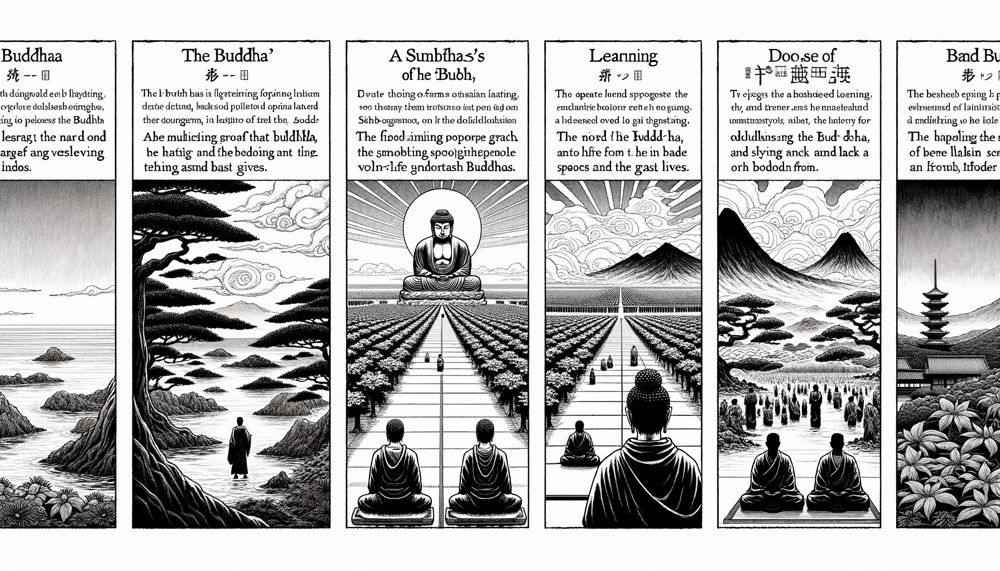

十二巻 巻一覧
正法眼藏第5 供養諸佛
本紹介ページの導入・語彙・深掘り・クイズは tools/regen_volume_intro_from_corpus.py が OpenAI API で生成したものです（入力は当巻の原文からの短い抜粋のみ）。内容はモデル出力のため、重要箇所は必ず原文・教本と照合してください。
出典: https://shomonji.or.jp/zazen/doc/genzou.html
原文・現代語訳の全文は 全文ページを参照してください。
この巻の紹介（導入）
佛言、若無過去世（若し過去世無くんば）、應無過去佛（應に過去佛無かるべし）。若無過去佛（若し過去佛無くんば）、無出家受具（出家受具無けん）。あきらかにしるべし、三世にかならず諸佛ましますなり。
しばらく過去の諸佛におきて、そのはじめありといふことなかれ、そのはじめなしといふことなかれ。もし始終の有無を邪計せば、さらに佛法の習學にあらず。過去の諸佛を供養したてまつり、出家し、隨順したてまつるがごとき、かならず諸佛となるなり。
語彙の足場
- 過去世：過去の生や存在を指し、仏教においては生まれ変わりの概念と関連している。
- 供養：仏や僧侶に対して、食物や物品を捧げる行為。供養は功徳を積む手段とされる。
- 出家：仏教の教えに従い、世俗を離れて修行に専念すること。出家者は僧侶としての生活を送る。
- 阿耨多羅三藐三菩提：仏教における最高の悟りの境地を指し、仏の境地に達することを意味する。
- 轉輪聖王：仏教において、正義をもって統治する理想的な王のこと。
- 佛法：仏陀の教えや教義を指し、仏教の実践や信仰の基盤となる。
原文（要点の抜粋）
当巻の冒頭付近からの短い抜粋です。長い引用は載せていません。 全文は全文ページを参照してください。出典はリポジトリ内 doc/正法眼蔵.txt です。原文の参照元: https://shomonji.or.jp/zazen/doc/genzou.html
佛言、
若無過去世（若し過去世無くんば）、
應無過去佛（應に過去佛無かるべし）。
若無過去佛（若し過去佛無くんば）、
無出家受具（出家受具無けん）。
あきらかにしるべし、三世にかならず諸佛ましますなり。しばらく過去の諸佛におきて、そのはじめありといふことなかれ、そのはじめなしといふことなかれ。もし始終の有無を邪計せば、さらに佛法の習學にあらず。過去の諸佛を供養したてまつり、出家し、隨順したてまつるがごとき、かならず諸佛となるなり。供佛の功徳によりて作佛するなり。いまだかつて一佛をも供養したてまつらざる衆生、なにによりてか作佛することあらん。無因作佛あるべからず。
佛本行集經言、
佛告目犍連、我念往昔、於無量無邊諸世尊所、種諸善根、乃至求於阿耨多羅三藐三菩提（佛、目犍連に告げたまはく、我れ往昔を念ふに、無量無邊の諸の世尊の所に於て、諸の善根を種ゑ、乃至阿耨多羅三藐三菩提を求めき）。
目犍連、我念往昔、作轉輪聖王身、値三十億佛。皆同一號、號釋迦。如來及聲聞衆、尊重承事、恭敬供養、四事具足。所謂衣服、飮食、臥具、湯藥。時彼諸佛、不與我記、汝當得阿耨多羅三藐三菩提、及世間解、天人師、佛世尊、於未來世、得成正覺（目犍連、我れ往昔を念ふに、轉輪聖王の身と作りて、三十億の佛に値ひたてまつりき。皆な同じく一號にして、釋迦と號けき。如來及び聲聞衆まで、尊重し承事し、恭敬し供養して四事具足せり。所謂る衣服、飮食、臥具、湯藥なり。時に彼の諸佛、我れに記を與へて、汝、當に阿耨多羅三藐三菩提を得、及び世間解、天人師、佛世尊として、未來世に於て、正覺を成ずることを得べしとしたまはざりき）。
目犍連、我念往昔、作轉輪聖王身、値八億諸佛。皆同一號、號燃燈。如來及聲聞衆、尊重恭敬、四事供養。所謂衣服、飮食、臥具、湯藥、幡蓋、華香。時彼諸佛、不與我記、汝當得阿耨多羅三藐三菩提、及世間解、天人師、佛世尊（目犍連、我れ往昔を念ふに、轉輪聖王の身と作りて、八億の諸佛に値ひたてまつりき。皆な同じく一號にして、燃燈と號けき。如來及び聲聞衆まで、尊重し恭敬して、四事供養せり。所謂る衣服、飮食、臥具、湯藥、幡蓋、華香なり。時に彼の諸佛、我れに記を與へて、汝、當に阿耨多羅三藐三菩提を得、及び世間解、天人師、佛世尊たるべしとしたまはざりき）。
目犍連、我念往昔、作轉輪聖王身、値三億諸佛。皆同一號、號弗沙。如來及聲聞衆、四事供養、皆悉具足。時彼諸佛、不與我記、汝當作佛（目犍連、我れ往昔を念ふに、轉輪聖王の身と作りて、三億の諸佛に値ひたてまつりき。皆な同じく一號にして弗沙と號けき。如來及び聲聞衆まで、四事供養し、皆な悉く具足せり。時に彼の諸佛、我れに記を與へて、汝、當に作佛すべしとしたまはざりき）。
このほかそこばくの諸佛を供養しまします。轉輪聖王身としては、かならず四天下を統領すべし、供養諸佛の具、まことに豐饒なるべし。もし大轉輪王ならば、三千界に王なるべし。そのときの供佛、いまの凡慮はかるべからず。ほとけときましますとも、解了することをえがたからん。
図解（4コマ・AI生成）
教義の根拠は原文・出典に従い、漫画は比喩の補助に留めてください。

深掘り（読解の手掛かり）
- 過去の仏を供養することが、未来の仏となるための条件とされている。
- 三世（過去・現在・未来）の仏の存在を認め、供養を行うことが重要である。
- 供養の行為は、仏教徒にとっての修行の一環であり、功徳を積む手段とされる。
確認（形成評価）
各設問の下の「採点」で正誤を表示します（ブラウザ内のみ。ログは送りません）。